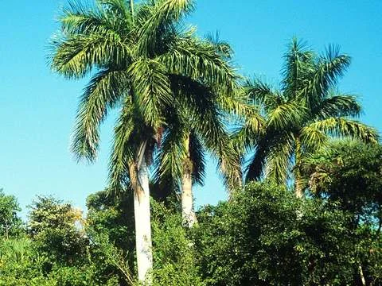

Veredicto de cultivo en exterior
La palmera real vive al aire libre solo en inviernos suaves, alrededor de los 28°F (-2°C, USDA 10a+). Una helada real la dañará. Si tu invierno baja de esa temperatura, evítala. No la envuelvas esperando un milagro.
La palmera de bulevar lisa y de color gris cemento del sur de Florida. Nativa allí y en el Caribe, USDA 10a a 11a, daños cerca de los -2°C (28°F).
Resistencia al frío
Sobrevive hasta aprox. 28°F / -2°C. Rango en exterior: USDA 10a–11a. Pasa el cursor o haz clic en las zonas climáticas para consultar la tolerancia.
Zonas USDA compatibles destacadas: 10a–11a. Las regiones coloreadas en Argentina son aptas para cultivo en exterior.
Argentina
Isoterma compatible en Argentina Demasiado frío
Se muestran las isotermas térmicas oficiales de la República Argentina (SMN / Plantmaps). Una región está resaltada si sus mínimas invernales permiten la supervivencia de esta especie.
Cuidado en invierno
El drenaje importa más que una manta. Suelo: Cualquier suelo bien drenado. Riego: Húmedo pero nunca encharcado (mésico). Envolver la planta no te otorga una zona climática extra. Si el invierno es más frío que su número límite (-2°C), mantenla en una maceta para resguardarla.
Datos científicos y características
- El capitel verde y el tronco gris liso son su marca de identificación incluso desde un vehículo en movimiento.
- Es nativa de partes del sur de Florida, México, América Central y el Caribe, no es una importación puramente exótica.
- Los vientos huracanados pueden defoliarla por completo. El cogollo central suele brotar de nuevo si la lanza principal no se ha pudrido.
| Altura promedio | 15–24 m (50–80 ft) |
|---|---|
| Extensión de copa | 4.5–6 m (15–20 ft) |
| Apta para interior | No |
| Requerimiento de luz | Pleno sol |
| Requerimiento de agua | Húmedo pero nunca encharcado (mésico) |
| Tipo de suelo | Cualquier suelo bien drenado |
| Región de origen | Sur de Florida, México a Centroamérica y el Caribe |
Descubrimiento e historia
Kunth publicó Oreodoxa regia en 1816. O.F. Cook la trasladó al género Roystonea en 1900, rindiendo homenaje al General Roy Stone.
Publicada por primera vez en 1900 (Roystonea); basónimo de 1816 · IPNI 222809-2
Nombres y sinónimos
Nombres comunes: Palmera real, Palmera real cubana, Palmera real de Florida.
Sinónimos: Oreodoxa regia Kunth
Guía completa de cuidados
La palmera real es el árbol de bulevar liso de color gris cemento característico del sur de Florida y el Caribe. Nativa en partes de Florida, México, América Central y las islas. Rango USDA 10a a 11a. Una helada alrededor de los -2°C (28°F) quema la copa. Requiere calor, agua y una calle ancha o espacio abierto, no un patio pequeño en zona 9.
Rápido con calor, agua y fertilización. Lento en un invierno fresco o en un alcorque ajustado.
Frutos de color púrpura-negro que consumen aves y murciélagos. Puede resultar sucio sobre autos estacionados debajo de una alineación.
Pleno sol.
Riego regular, especialmente en suelos arenosos y durante los primeros años de establecimiento. No dejes que un ejemplar nuevo se seque hasta secar la lanza.
Medio. Autolimpiante la mayor parte del tiempo, pero una hoja caída es muy pesada. Fertilizar durante la temporada de crecimiento con fertilizante específico para palmeras. La deficiencia de potasio se manifiesta como manchas translúcidas y muerte de las puntas de los folíolos.
Ganoderma en troncos viejos, amarillamiento letal en algunas regiones, cochinillas y picudos en árboles estresados. Una lanza podrida tras una tormenta es un trabajo de saneamiento y corte fitosanitario.
Plantar a pleno sol con riego en terrenos bien drenados. Evitar terrenos muy reducidos o cerca de estructuras pequeñas. No esperes que reemplace a una palmera Trachycarpus en un patio propenso a heladas fuertes.
Preguntas frecuentes sobre la Palmera Real
¿Vivirá la palmera real al aire libre?
Sí, siempre que el invierno se mantenga por encima de aproximadamente -2°C (28°F, USDA 10a+). Por debajo de ese valor, pertenece a un contenedor o invernadero.
¿Con qué la suelen confundir en los viveros?
Suele confundirse a menudo con la Palmera Pindó o Reina (Syagrus romanzoffiana), aunque la Palmera Real posee un capitel verde liso y un tronco mucho más limpio y masivo.
¿Maceta o suelo directo en una zona fría?
En regiones con heladas recurrentes (Zona 9a o inferior), debe mantenerse en contenedor para poder trasladarla a un entorno protegido durante los meses más fríos.
¿Es nativa de Florida y el Caribe?
Sí, es autóctona del sur de la península de Florida, Cuba, México y varias islas del Caribe.
¿Qué tan rápido crece?
Con temperaturas cálidas, abundante agua y fertilización adecuada, es una de las palmeras de crecimiento más rápido, pudiendo desarrollar varios metros de tronco en pocos años.
Palmeras relacionadas y alternativas
Opciones con diferentes niveles de resistencia térmica: